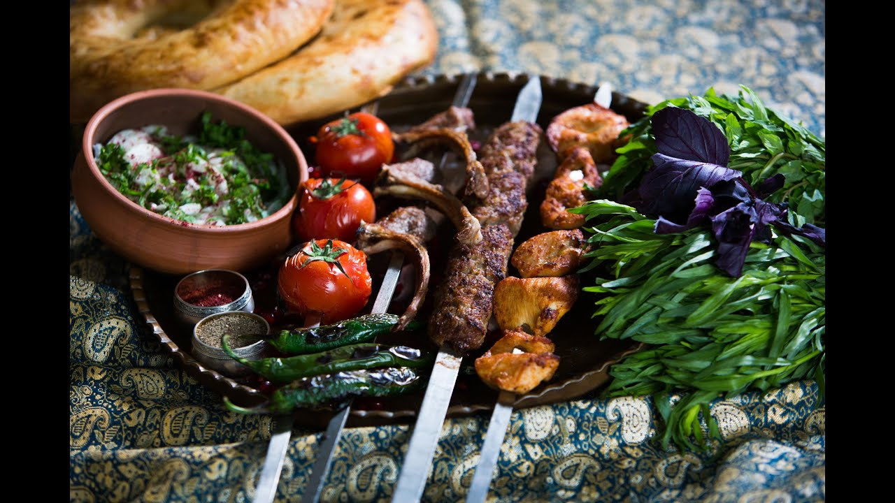
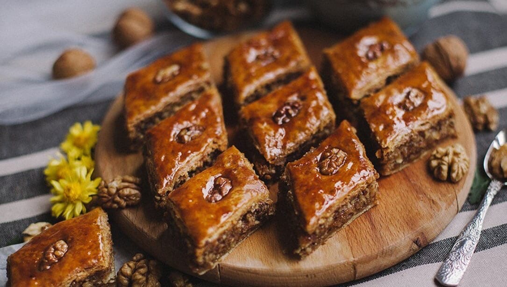

Азербайджанская кухня
Азербайджанская кухня с полным правом может претендовать на звание одной из наиболее самобытных в мире. Ее становление произошло под влиянием религиозных обычаев и культурных традиций, а также благодаря огромному количеству заимствований из кухонь Грузии, Ирана и других стран. Несмотря на тот факт, что азербайджанская кухня имеет достаточно много общего с кулинарными традициями других народов Закавказья, ей удалось сформировать собственные неповторимые особенности. В итоге оригинальные блюда Азербайджана завоевали заслуженное признание, в том числе и за пределами страны.
 
Главная страница